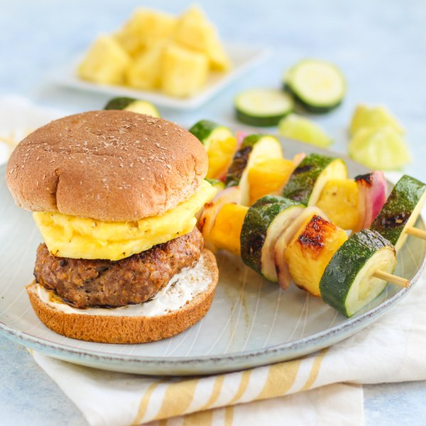

Hawaiian Pork Burger with Citrus Grilled Pineapple, Zucchini & Onion

Prep Time
35 min
Nutrition (per serving)
701 kcalCalories
39.4 gProtein
45.1 gCarbs
41.9 gFat
Full nutrition table
| Calories | 701 kcal |
| Total fat | 41.9 g |
| Saturated fat | 10.7 g |
| Trans fat | 0.6 g |
| Cholesterol | 120.2 mg |
| Sodium | 374 mg |
| Carbohydrates | 45.1 g |
| Fiber | 6.4 g |
| Sugars | 20 g |
| Protein | 39.4 g |
| Potassium | 1012 mg |
| Calcium | 124.4 mg |
| Iron | 3.7 mg |
| Vitamin A | 278.4 IU |
| Vitamin C | 79.2 mg |
| Vitamin D | 29.8 IU |
Cookware
Ingredients
- 2 clovesgarlic
- 2 (1 inch) piecesginger root
- 1 ½ lblean ground pork
- 1lime
- 1 smallpineapple
- 1 mediumred onion
- 4whole grain buns or rolls
- 2 mediumzucchini squash
- black pepper
- extra virgin olive oil
- mayonnaise
- panko bread crumbs
- salt
- soy sauce
Steps
- If using wooden skewers, place 8-12 skewers in a shallow dish of water to soak until you are ready to use them.
- Wash and dry the fresh produce.2 medium zucchini squash
1 small pineapple
1 lime
2 (1 inch) pieces ginger root - Trim zucchini and cut crosswise into 1-inch rounds. Peel, halve, and cut onion lengthwise into 1-inch wide wedges; place both in a medium bowl.1 medium red onion
- Cut off skin from pineapple, halve, and remove the core. Cut a portion of the pineapple into 8 thin slices to place on top of the burgers; set aside for serving. Large dice remaining pineapple and add to the bowl with the veggies.
- Zest lime into the bowl with the veggies and pineapple (set lime aside for later); drizzle with oil, season with salt, and toss to combine.4 tsp extra virgin olive oil
1 tsp salt - Thread veggies and pineapple onto skewers and place on a plate; alternatively, you can cook the veggies and pineapple directly on the grill pan. (Reserve the bowl for later use.)
- Preheat a grill pan or regular skillet over medium-high heat.
- Once the grill pan is hot, working in batches if necessary, add skewers and cook, turning occasionally, until the veggies are charred and tender, 4-5 minutes. Return to the plate and loosely cover with aluminum foil.
- Meanwhile, peel and mince garlic and ginger; place both in the reserved bowl.2 cloves garlic
- Add pork, bread crumbs, soy sauce, salt, and pepper to the bowl with the garlic and ginger; use your hands to thoroughly combine. Form into 4 equal-sized patties and place on a plate.1 ½ lb lean ground pork
¼ cup panko bread crumbs
2 tsp soy sauce
½ tsp salt
½ tsp black pepper - When the skewers are done, coat the grill with oil. Place burger patties on the grill and cook, undisturbed, for 5 minutes; flip patties, and grill an additional 3-4 minutes, until cooked through. Once done, transfer to a clean plate.2 tsp extra virgin olive oil
- While the burgers are cooking, cut reserved lime into wedges.
- Toast buns on the grill (if desired).4 whole grain buns or rolls
- Spread mayo over the bottom half of each bun; top with a pork burger and two slices of pineapple. Close with the top half of each bun.2 tbsp mayonnaise
- To serve, divide burgers and skewers between plates. Squeeze lime over the skewers and enjoy!